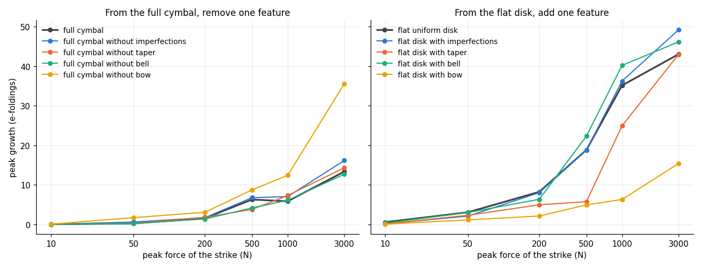
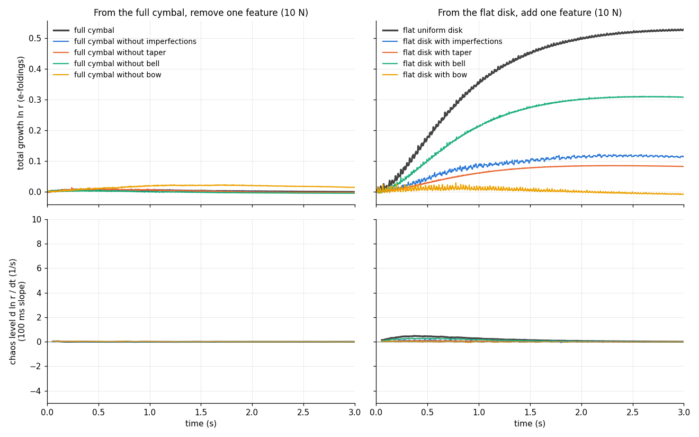
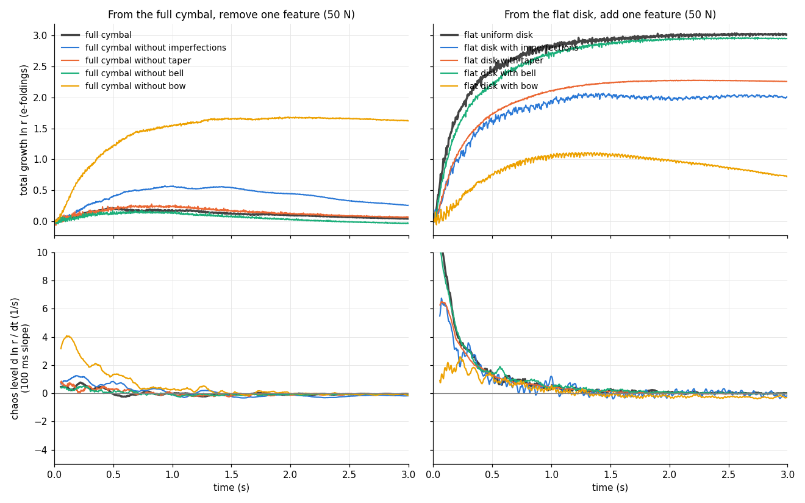
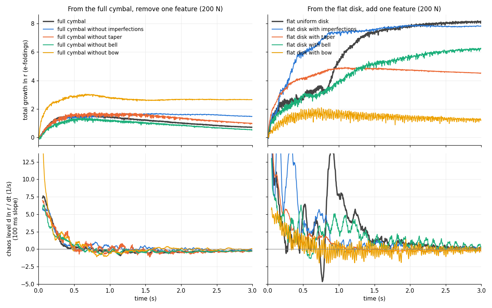
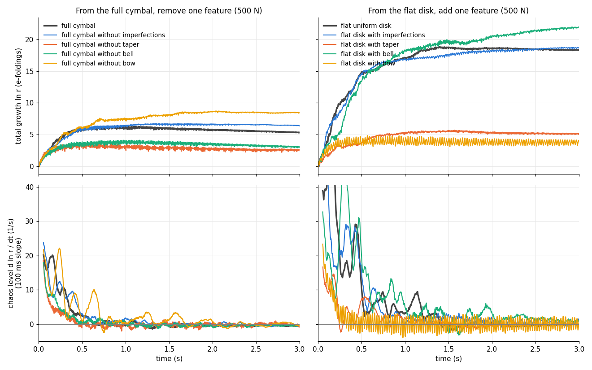
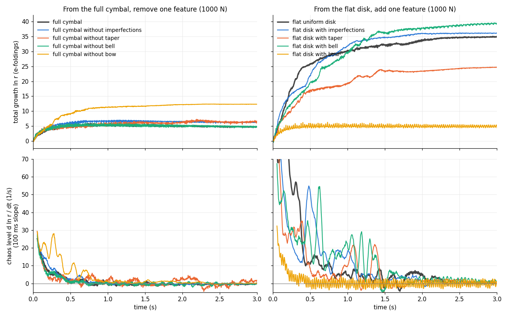
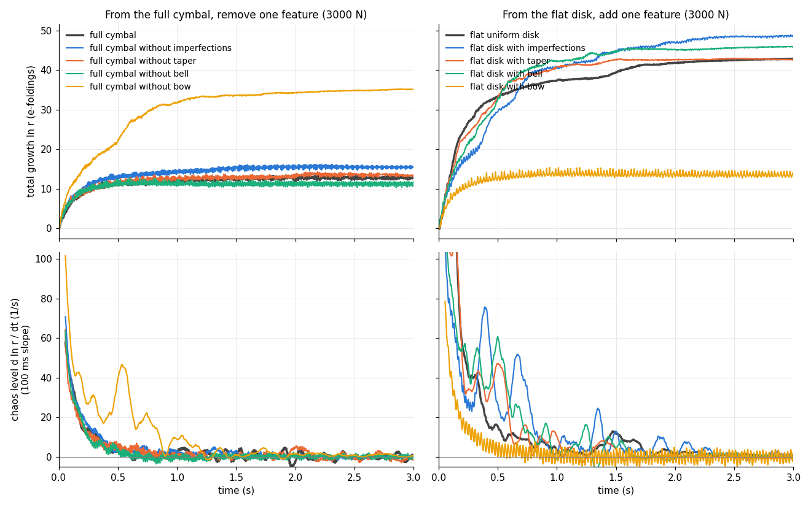

Report 03 of the struck-shell-chaos project. cymsim's default cymbal (18-inch B20 crash: bow, bell, taper, hammer dents, rim warp) struck at 0.85 R by a 1 ms raised-cosine force (finite elements, float64, 8 s). Sound at the listener, each file normalised to its own peak.
| damping | 1000 N | 3000 N |
|---|---|---|
| default: σ0 = 0.9 /s, σ1 = 0.0005 m²/s (T60 about 1.8 s at 1 kHz) | ||
| x2: σ0 = 0.45 /s, σ1 = 0.00025 m²/s (about 3.7 s at 1 kHz) | ||
| x3: σ0 = 0.3 /s, σ1 = 0.00015 m²/s (about 5.9 s at 1 kHz) |
Chosen for the rest of the report: x2.
The full cymbal with one feature removed, and the flat uniform disk with one feature added (5 s each, the sound of the tangent runs' own strikes; damping x2).
| geometry | 10 N | 50 N | 200 N | 500 N | 1000 N | 3000 N |
|---|---|---|---|---|---|---|
| full cymbal | ||||||
| full cymbal without imperfections | ||||||
| full cymbal without taper | ||||||
| full cymbal without bell | ||||||
| full cymbal without bow | ||||||
| flat uniform disk | ||||||
| flat disk with imperfections | ||||||
| flat disk with taper | ||||||
| flat disk with bell | ||||||
| flat disk with bow |






